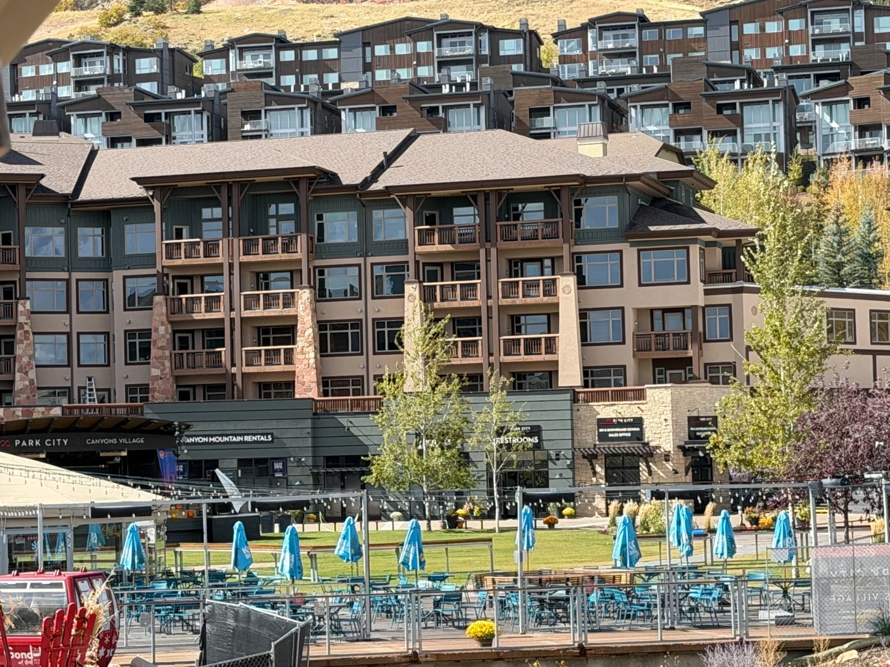
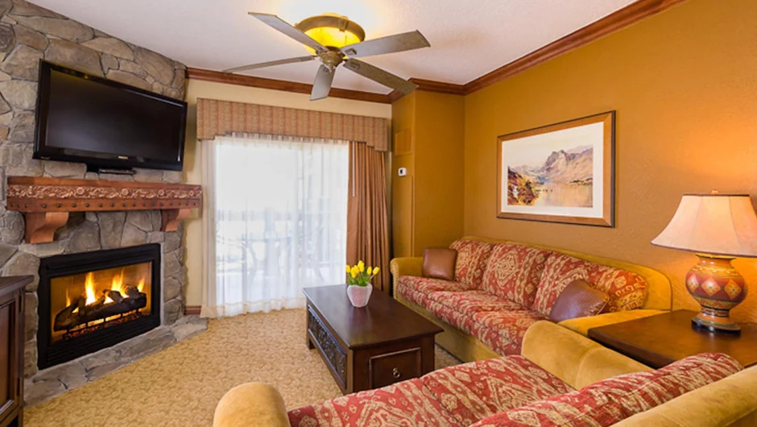

Slopeside accommodation is one cost. Lift tickets are another entirely. Ski rentals and lessons can double the per-day number before meals enter the picture. This guide breaks down each component for 2026-27 so the full week cost is not a surprise when you are deciding whether slopeside access is worth the premium.

What ski-in ski-out means at Canyons Village
At Park City Mountain, ski-in ski-out does not mean the same thing at every property. Some buildings at the town base sit directly beside skiable terrain. At Canyons Village, the arrangement is different.
The Canyons Village Skyway gondola is an enclosed, free-to-ride transport gondola connecting the main parking structure and the base village. It runs from 7 am to 6 pm and is village transport — not a ski lift. The ski lifts, Red Pine and Orange Bubble Express, load from the base of the village proper. Westgate Park City Resort sits close to both, with a short walk in ski boots from the building to the gondola station or directly to the lift queues.
Exactly how short that walk is depends on which building entrance you use and snow conditions underfoot. Our guide on the walk from Westgate to the lifts covers the actual distances and what they feel like at 7 am in full gear. The bigger point: slopeside at Canyons Village means proximity, not a true door-to-snow connection. For a full explanation, our guide on what ski-in ski-out actually means goes deeper.
Accommodation: the slopeside premium
Slopeside adds a real premium over staying off the mountain.
Slopeside Canyons Village hotels — Grand Summit, Hyatt Centric — run from around $500 to $550 per night at peak, with higher-end properties above $900. A hotel a mile from the base in a comparable room typically costs several hundred dollars less per night for the same week.
A privately owned villa rented directly from the owner runs differently. There is no agency commission and no platform booking fee — just the owner's rate plus the resort fee and village assessment that apply to every unit regardless of booking path. Our guide to Park City resort fees covers what to ask for upfront.
Lift tickets for 2026-27
Lift ticket pricing at Park City Mountain uses dynamic pricing, which means the number changes with demand, the booking window and the specific date. For 2026-27, a peak-day adult lift ticket is listed at $369, according to published pricing compiled by TownLift in September 2026. Lower-demand days and earlier purchases typically cost less.
The Epic Pass family of products changes the equation significantly. An Epic Day Pass allows holders to book a fixed number of skiing days at dramatically lower per-day rates. A full Epic Pass at the highest-demand times pays back against peak-day rates in roughly four days of skiing.
One specific note for Presidents' Week: 13 and 14 February 2027 are listed as blackout dates at Park City Mountain for Epic Local Pass and other restricted Epic products. Holders of those passes need to budget for passholder or day tickets on those two dates. Full Epic Pass terms differ — verify at epicpass.com before booking. Our lift tickets and Epic Pass guide covers how the maths works across different scenarios.
Ski rentals: on-mountain versus off
Shops at the Canyons Village base charge on-mountain rates; independent shops a few miles toward Kimball Junction or the Park City town base are typically less expensive for the same equipment tier.
For 2026-27, ski rental prices from independent Park City shops start around $32 to $40 per day for a standard package, rising to $42 to $55 per day for a performance package. Walk-in rates are higher than online rates at most shops; booking 24 hours or more in advance typically saves around 20 per cent.
Our ski rentals guide for Canyons Village covers the shops closest to Westgate, what each one offers and what gear level makes sense for different ability levels.

What the full week costs per person
The table below covers the most predictable per-person costs for a seven-night, seven-ski-day stay at Canyons Village. Accommodation varies too widely to give a per-person figure; the sections above cover it. All figures are from published 2026-27 sources and should be treated as estimates.
| Line item | Estimated range | Notes |
|---|---|---|
| Lift tickets (7 days, Epic Day Pass) | $700–$900 | Epic Day Pass range; actual depends on tier purchased and timing |
| Lift tickets (7 days, day tickets) | Up to $2,583 | Seven peak-day tickets at $369 each; lower on non-peak days |
| Ski rental (7 days, performance, online) | $295–$385 | Performance package, online booking; walk-in rates higher |
| Ski school (one adult group lesson) | Around $200+ | Resort pricing; confirm current rate before booking |
| Airport transfer SLC–Park City (shared van) | $75–$100 | Split across a larger group; individual transfer more |
Meals are the remaining variable. A group of eight cooking in the villa kitchen reduces dining costs significantly compared with eating out every night. Our rentals guide and the peak week booking guide cover the components that benefit most from advance purchase.
When the slopeside premium makes most sense
For a group skiing Presidents' Week, the difference between walking to the gondola from your front door and driving in — finding parking, unloading gear, navigating the village — adds up over seven days to meaningful ski time, and a noticeably different start to each morning.
The premium makes most sense for a group on the mountain most of each day. It makes less sense for a group splitting between multiple resorts, spending days off the mountain, or for whom Main Street matters as much as the terrain above Canyons Village.
For Presidents' Week in February specifically — the most in-demand ski week at Park City Mountain — slopeside properties at Canyons Village book months ahead of the season. The booking window is as important as the nightly rate. Our guide on when to book a Park City peak week covers how far out each type of week moves and what waiting costs in availability.
The villa this guide is about
We own three Premier Two-Bedroom Villas inside Westgate Park City Resort, in Canyons Village. Each is 1,100 square feet — two king bedrooms, two queen sleeper sofas, sleeping eight — with a full kitchen, a kitchenette in the lock-off studio and two bathrooms with walk-in showers.
We rent directly, owner to renter. No platform fee, no agency layer. Our open weeks for 2027 are Presidents' Week, 13 to 20 February, and spring break, 21 to 28 March. One enquiry, one person who answers it.
Common questions
What is the peak-day lift ticket price at Park City Mountain in 2026-27?
Published pricing for 2026-27 shows a peak-day adult lift ticket at $369. Dynamic pricing means the actual rate changes with demand, booking window and the specific date. Epic Day Pass holders pay significantly less per day depending on how many days they purchase and when they book.
Are there Epic Pass blackout dates during Presidents' Week at Park City?
Yes, for some pass types. For the 2026-27 season, 13 and 14 February 2027 are listed as blackout dates at Park City Mountain for Epic Local Pass and other restricted Epic products. Holders of those passes need to budget for passholder or day tickets on those two specific dates. Full Epic Pass holders should confirm their pass terms at epicpass.com.
How much cheaper are ski rentals off the mountain?
Independent shops away from the Canyons Village base typically charge less than on-mountain options for equivalent equipment. Standard packages run from around $32 to $40 per day at independent shops; performance packages from $42 to $55. Online booking 24 hours ahead saves around 20 per cent over walk-in rates at most shops.
What does a slopeside villa at Canyons Village cost compared with a slopeside hotel?
Published rates for slopeside hotels at Canyons Village in 2026-27 run from around $500 to $900 or more per night at peak. A privately owned villa rented direct from the owner does not carry an agency commission or a platform booking fee, so the all-in rate reflects what the owner charges. Asking for the total including resort fee and village assessment is the only way to compare options accurately.
Is ski-in ski-out at Park City Mountain Resort true door-to-snow access?
At Canyons Village, slopeside means a short walk in ski boots to the gondola station or the lift queues, not skiing through the front door. The Skyway gondola is village transport, running from 7 am to 6 pm; the ski lifts load from the base of the village. What 'slopeside' means at a specific building varies; confirming actual walking times is worth doing before booking.